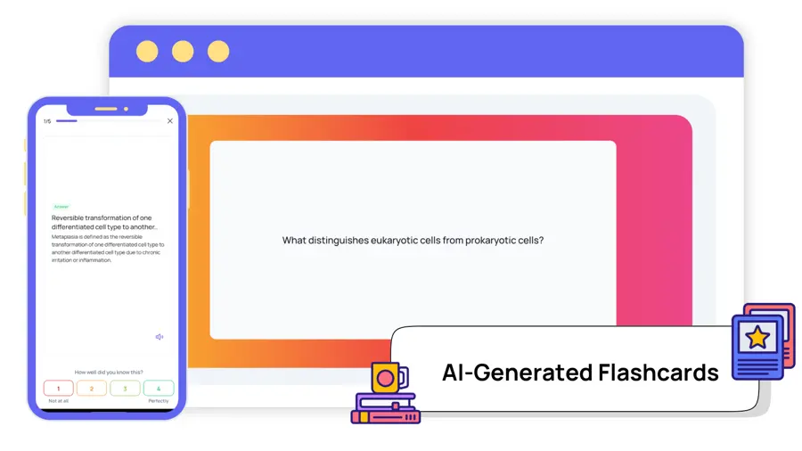
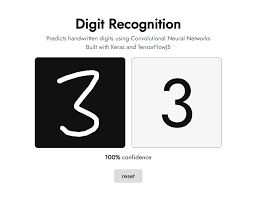

My Portfolio
Home
About
Portfolio
Services
Contact
My Work
Here are some of my projects:
Project 1 - AI Flashcard Generator 
Project 2 - Sentiment Analyzer for Student Feedback
Project 3 - Handwritten Digit Recognizer 